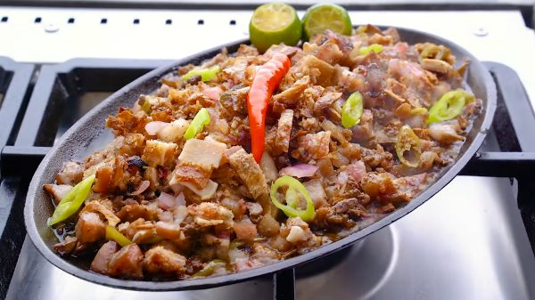

Sisig
Sisig is a beloved Filipino dish that originated in Pampanga. Traditionally, it's made from chopped pork jowl, ears, and belly,
mixed with chicken liver, onions, and chili peppers, then served sizzling on a hot plate. Over time, variations have
emerged, including chicken, seafood, and even tofu sisig.
It's known for its rich, tangy, and savory flavors, often enhanced with calamansi juice and mayonnaise. Some say it pairs perfectly with a
cold drink, making it a favorite pulutan (beer snack) in gatherings.
Ingredients:
- 1 ½ lbs. pork belly boiled for 1 hour
- ½ cup Lady's Choice Mayonnaise
- 2 pieces onion chopped
- 4 pieces Thai chili pepper chopped
- 2 pieces long green pepper chopped
- 16 grams Knorr SavorRich Pork equivalent to 1 sachet
- ½ teaspoon ground black pepper
- 2 tablespoons soy sauce
- ¼ cup margarine
- 2 cups cooking oil
Instructions:
- Heat oil in a deep cooking pot or deep fryer. Fry the boiled pork belly until golden brown and crispy. Chop the crispy pork belly into small pieces. Set aside.
- Heat half of the margarine in a pan. Sauté half of the onions until soft. Add chopped pork. Saute for 30 seconds.
- Add Knorr SavorRich. Stir and then add chili peppers and season with ground black pepper and soy sauce. Cook for 1 minute.
- Add Lady's Choice Mayonnaise. Stir and add remaining onion. Set aside.
- Heat a metal plate (sizzling plate) on a stovetop. Melt remaining margarine. Transfer the crispy pork sisig into the metal plate. Let it stay for 30 seconds.
- Serve with warm rice and your favorite beverage. Enjoy!
Home